Overview
The path-tracing algorithm enables us to create a physically-based renderer with realistic results. In this homework, we implemented ray generation and intersection, BVH, direct illumination, global illumination, and adaptive sampling. In the end, we are able to render noise-free images with realistic-looking in a reasonable rendering time.
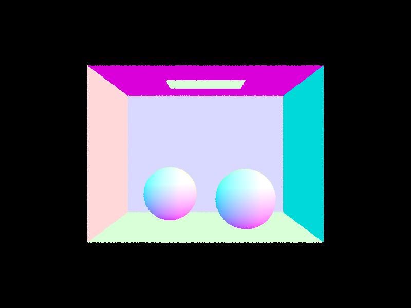
\sky\CBspheres_lambertian.dae rendered with normal shading. |
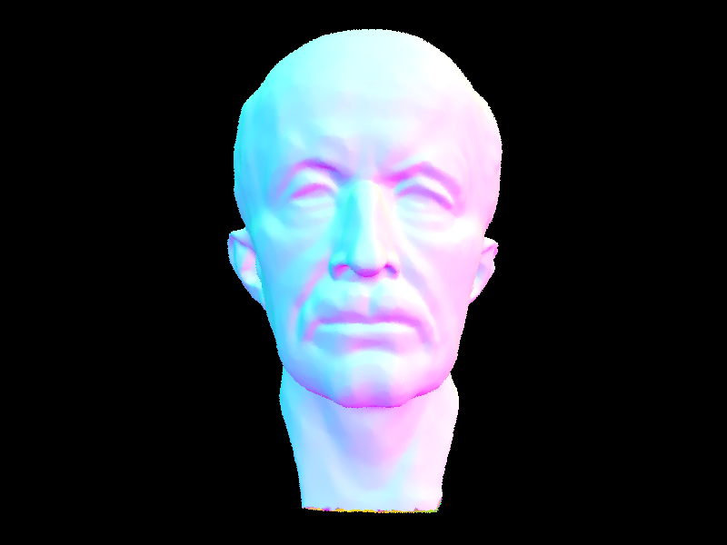
\meshedit\maxplanck.dae rendered with BVH implemented. |
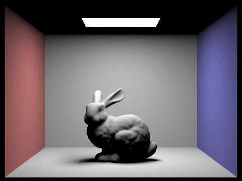
\sky\CBbunny.dae rendered with importance sampling, 32 light rays, and 64 sample per pixel. |
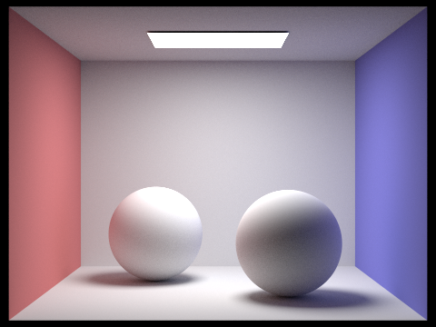
\sky\CBspheres_lambertian.dae rendered with global illumination, 5 max ray depth, 16 light rays, and 1024 sample per pixel. |
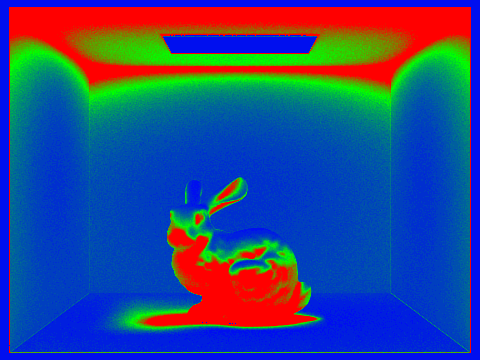
\sky\CBbunny.dae rendered with adaptive sampling. |

\sky\CBbunny.dae rendered with adaptive sampling, with 2048 sample per pixel. |
Part 1: Ray Generation and Scene Intersection
Ray generation and intersection pipeline
- In the
raytrace_pixel()function, we take num_samples of random sample ray for a given pixel location(x, y). The random sample is generated by creating ray that originates from(0,0)and ends in( x: x+1, y: y+1 ). - For each random ray, we call
est_radiance_global_illumination()to estimate the global illumination of that sample ray. - In
est_radiance_global_illumination(), we first check if the ray intersect with any object in the given scene ( by callingbvh->intersect(r, &isect)). - If the ray intersects with any object, we compute the zero bounce light ( the hit point is a light source and has its own emission ) and at least one bounce light at the hit location.
- After estimating all illumination of all sample ray, we compute their average and use its average value ( an MC estimation ) as that pixels illumination.
Explain triangle intersection algorithm
There are two ways to implement ray triangle intersection. First is to intersect the ray with a plane and then check if the hit point is inside the triangle or not. Second is to use the Möller Trumbore algorithm. In this homework, we choose to implement the Möller Trumbore algorithm.
The basic idea of the Möller Trumbore algorithm is to convert the “point inside triangle” test into an “implicit surface”, and then solve the ray triangle test like other ray implicit surface tests. Specifically,
- the “point inside triangle” test is converted into
(1 - b1 - b2 ) p0 + b1 * p1 + b2 * p2, where the triangle is represented in their barycentric coordinates. - The ray is represented with
O + t D. - After solving the equation and getting a solution for t, b1, b2. We then check if
b1, b2, (1-b1-b2)is within the range of[0, 1). This is the same as checking if a point is inside the triangle or not with barycentric coordinates.
Normal shading result
|
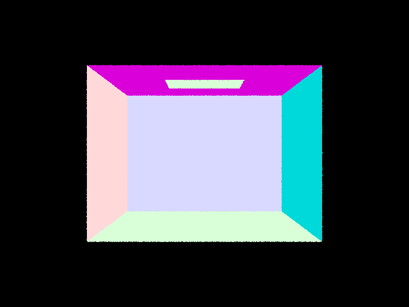
|
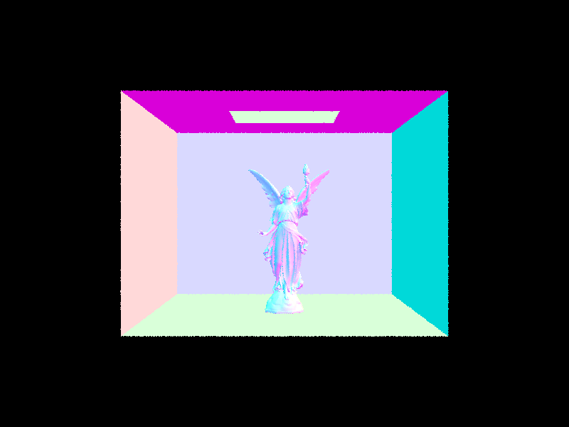
|
|
|
Part 2: Bounding Volume Hierarchy
We implement a Bounding Volume Hierarchy (BVH) data structure to speed up our path tracer. BVH is an object partition algorithm that stores primitives inside a tree structure and evaluates the ray with the bounding box of each node. With BVH, we construct a binary tree, store only a small number of primitives in each leaf node exclusively, and traverse the tree by checking whether the ray intersects with the bounding box of each node. The binary tree structure grants fewer intersection checks and huge speed-up.
Implementation of BVH construction
The implementation of our BVH construction is detailed as follows:
- Iterate through the given list of primitives and expand the node's axis-aligned bounding box with the primitive's bounding box. Also, obtain the centroid of each primitive and calculate the average centroid of the primitives.
- If there are no more than
max_leaf_sizeprimitives in the list, we make a leaf node and store the given range as the start and end of the primitives in the leaf node. - Otherwise, we treat the node as an internal node and further split the given list into two halves. To split the list, we first find the longest axis of the bounding box using
bbox.extent. Then, we obtain the value of the average centroid on that axis. Usingstd::partition, we can partition the primitive list in place into two lists, one containing primitives smaller than the average centroid on the longest axis and the other containing the rest. If one of the lists happens to be empty, we move an arbitrary one to the other list. - Call the constructor method recursively on the two primitive lists, and assign the two constructed nodes as the left and right child nodes.
Choice of Heuristic
We choose the average centroid on the longest axis as the split heuristic. Initially, we use the spatial midpoint of the node's bounding box and select an arbitrary axis to obtain the split point. This approach leads to two problems:
Implementation of Intersection checks
Once we have the BVH tree, we can test the ray intersection in a more efficient way. That is, to test the intersection, we first check if the ray intersects with the bounding box of the node using the 3-slab method; we look for the entering and exiting time of the ray on the three axis and take the maximum of the entering time (“max of the mins”) and the minimum of the exiting time (“min of the maxs”). If the time interval overlaps with the ray's time interval, we proceed to see whether the node is a leaf node. If it is, we iterate through the primitives and find the nearest intersection. Otherwise, we call the function recursively to walk through the leaf and right nodes. This significantly reduces the time used for checking intersections, as we skip nodes (and primitives inside them) when we don't find intersections between the ray and the bounding boxes.
Sample results with large .dae files
\meshedit\maxplanck.dae rendered with BVH implemented. |
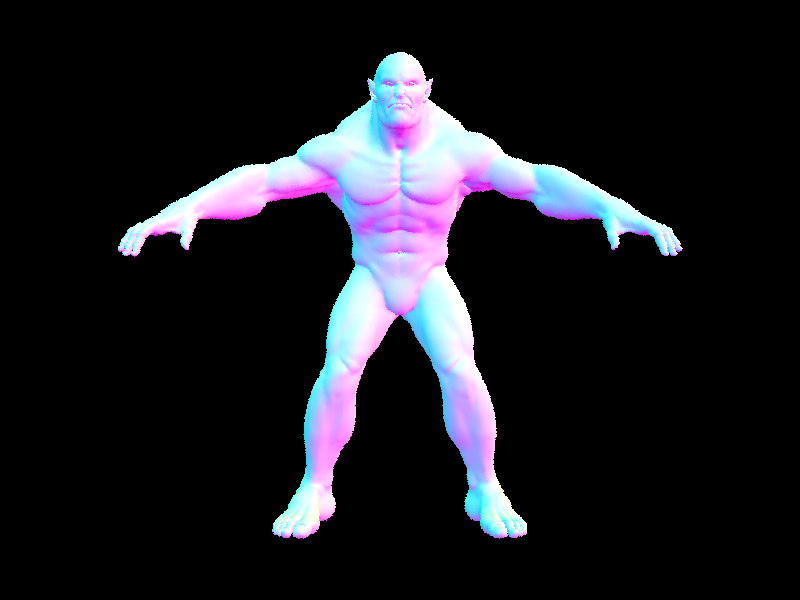
\meshedit\beast.dae rendered with BVH implemented. |
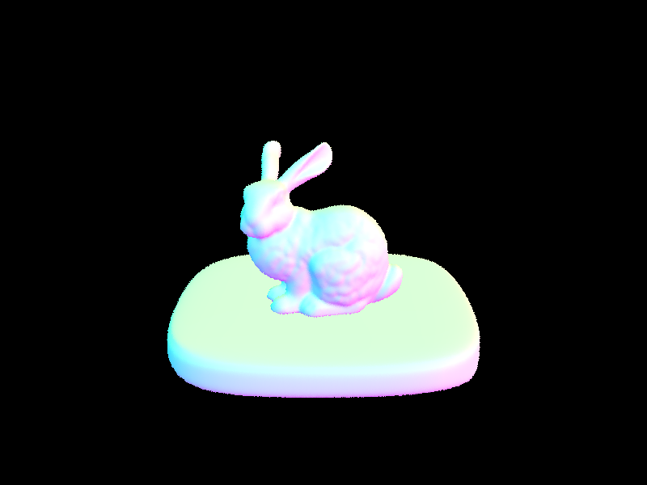
\sky\bunny.dae rendered with BVH implemented. |
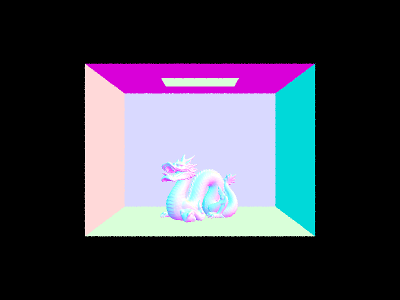
\sky\CBdragon.dae rendered with BVH implemented. |
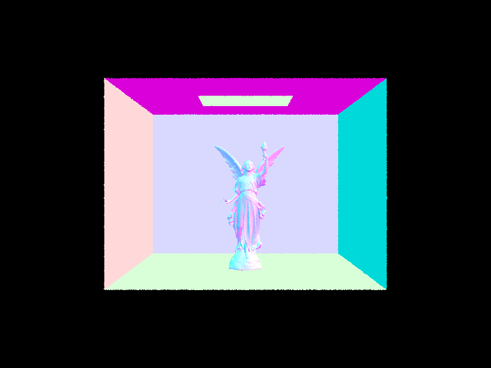
\sky\CBlucy.dae rendered with BVH implemented. |
Speed Comparison with non-BVH rendering
We see significant speedup with the BVH algorithm. The results for rendering with normal shading (8 threads, 800x600 size) are recorded below.
| Filename | Number of Primitives | Without BVH (s) | With BVH (s) (+ BVH construction) | Speedup |
|---|---|---|---|---|
| sky/CBgems.dae | 252 | 1.9228 | 0.0832 | 95.67% |
| keenan/banana.dae | 2458 | 17.4094 | 0.0596 | 99.66% |
| meshedit/teapot.dae | 2464 | 17.546 | 0.0736 | 99.58% |
| meshedit/cow.dae | 5856 | 39.9825 | 0.0824 | 99.79% |
| meshedit/beetle.dae | 7558 | 51.7652 | 0.0619 | 99.88% |
| sky/CBcoil.dae | 7884 | 60.9148 | 0.0838 | 99.86% |
| sky/CBbunny.dae | 28588 | N/A | 0.0800 + 0.02 | N/A |
| meshedit/maxplanck.dae | 50801 | N/A | 0.1011 + 0.03 | N/A |
| meshedit/beast.dae | 64618 | N/A | 0.0649 + 0.05 | N/A |
| sky/CBdragon.dae | 100012 | N/A | 0.0918 + 0.10 | N/A |
| sky/CBlucy.dae | 133796 | N/A | 0.0926 + 0.11 | N/A |
We can observe huge speed up (>99%) after applying the BVH algorithm thanks to the fact that we can skip many intersection checks. Before using BVH, a ray needs to check a few hundred primitives for intersection; one can observe that the running time is correlated with the number of primitives. With BVH, a ray only needs to check a few primitives (somewhere around max_leaf_size), and the running time is no longer correlated to the number of primitives. There is a cost for constructing the BVH tree, but the time is mostly negligible.
Part 3: Direct Illumination
Implementation of direct light sample over hemisphere
- Given an input ray
w_outand its intersection hit pointhit_pin the scene. We random samplenumber of light * number of samples per lightrandom input rayw_in. The random w_in is uniformly sampled over a unit hemisphere over the hit point. - For each random sample
w_inray, we cast a ray into the scene ( where the starting of ray is the hit point, and the direction of the ray isw_in) and check if the ray intersects with any object inside the scene. - If the ray intersect with object inside the scene (hit_light), we compute this MC sample as
f( hit_p, w_in, w_out ) * L_i( hit_light, w_in ) * cos (theta) / p( w_in ), wheref( hit_p, w_in, w_out )is the brdf term of hit_p,L_i( hit_light, w_in )is the intersected objects emitted light. If the intersected object hit_light is not a light source, itsL_i( hit_p, w_in )would be zero and not contribute to MC estimation. - We average the result over the number of samples we take.
Implementation of direct light sample over light source
- Given an input ray
w_outand its intersection hit pointhit_pin the scene. - We iterate through all the light sources in the scene. If the light source is a point light, we generate one ray between the light source and the hit point
hit_p. If the light source is not a point light, we uniformly sample ns_area_light locations on the light source and create rays between the light source random point and hit pointhit_p. - For every ray created in step (2), we check if the ray intersects any object between hit_p and the light source. This is the “shadow ray” idea mentioned in the spec.
- If there is no object in between, then this MC sample as
f( hit_p, w_in, w_out ) * L_i( light, w_in ) * cos (theta) / p( w_in ).
Different from the hemisphere case, we uniformly sample over the light source and use bvh to check if there is no object between the light and hit_p
Image sample result on both direct lightning method
TODO: RESULT MIGHT BE INCORRECT, DOUBLE CHECK
|
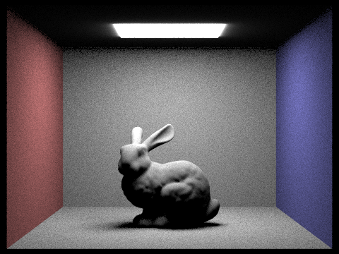
|
|
|
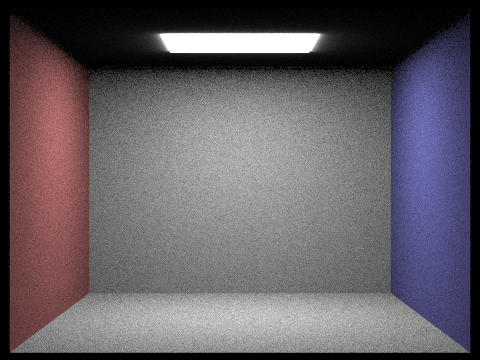
|
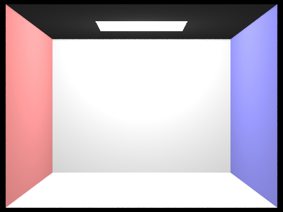
|
|
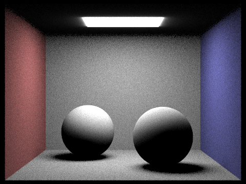
|
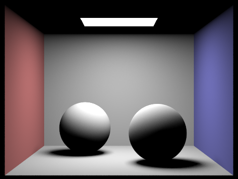
|
|
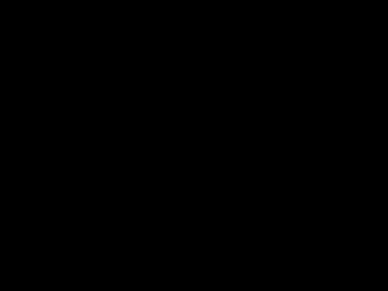
|
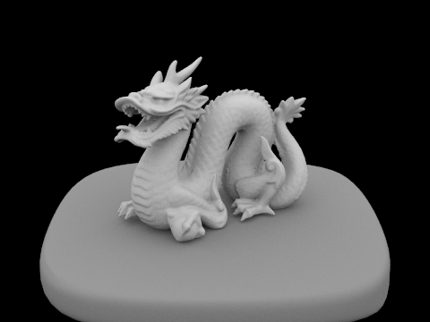
|
Part 4: Global Illumination
Part 5: Adaptive Sampling
Adaptive sampling is a method used to adjust the sampling rate for different parts of the image. When a pixel has converged early, we can terminate the sampling early to reduce the rendering time. Thus, we can raise the sampling rate to reduce noise in the most difficult areas without significantly increasing the overall running time.
Implementation of adaptive sampling
The implementation of adaptive sampling is detailed as follows:
-
Prepare
illuminance_sumandilluminance_sqr_sumto store the sums of the illuminance (\(s_1\)) and illuminance squared (\(s_2\)). -
While the number of sampled rays is smaller than the given maximum sampling rate (
ns_aa), generate a sample ray as specified in Part 1. Get the illuminance of the ray usingVector3D::illum()and add to the two sums accordingly. -
Whenever we have sampled a batch of rays (specified by
samplesPerBatch), calculate \(\mu = \frac{s_1}{n}\) and \(\sigma^2 = \frac{1}{n-1} * (s_2 - \frac{s_1^2}{n})\). We can then calculate \(I = 1.96 * \frac{\sigma}{\sqrt{n}}\) and check whether \(I \leq \text{maxTolerance} * \mu\). If true, we can say that the illuminance is already in 95% confidence interval and has thus converged. We can safely break from the loop. - Finally, we update the pixel by averaging the ray with the number of actual samples. We also update the sampling count buffer with the number of actual samples as well.
Sample results with sampling rate image
We rendered CBbunny.dae with 2048 samples per pixel, with 1 sample per light and 5 for max ray depth. The command we run is identical to the one on the assignment spec: ./pathtracer -t 8 -s 2048 -a 64 0.05 -l 1 -m 5 -r 480 360 -f bunny.png ../dae/sky/CBbunny.dae . The resulting images are render in 230 seconds. Results are shown below.
\sky\CBbunny.dae rendered with adaptive sampling. |
\sky\CBbunny.dae rendered with adaptive sampling. |
We also rendered CBspheres_lambertian.dae with the same settings. The command we run is: ./pathtracer -t 8 -s 2048 -a 64 0.05 -l 1 -m 5 -r 480 360 -f sphere.png ../dae/sky/CBspheres_lambertian.dae . The resulting images are render in 201 seconds. Results are shown below.
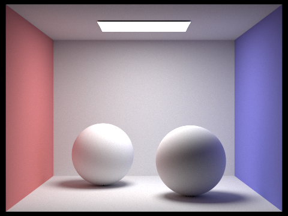
\sky\CBspheres_lambertian.dae rendered with adaptive sampling. |
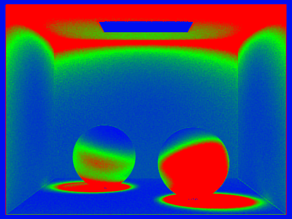
\sky\CBspheres_lambertian.dae rendered with adaptive sampling. |
txtcurve3.bzctext
- list1
- list2
- list3

bzc/curve3.bzc created, with 6 control points shown. |

bzc/curve3.bzc created, with the curve shown. |